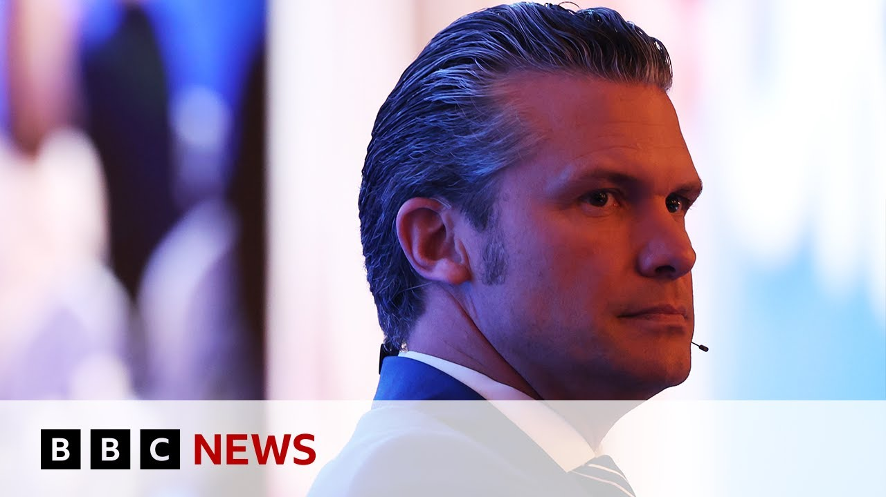

【赫格塞斯敦促亚洲加强防御以应对中国对台湾的“迫在眉睫”威胁 | BBC新闻】
Summary: The US defense secretary at the Singapore security summit emphasizes countering China's military dominance, calling for regional cooperation and increased defense spending amid concerns over China's military buildup and potential invasion of Taiwan, while China's absence from high-level talks is noted.
摘要： 美国国防部长在新加坡安全峰会上强调应对中国的军事主导地位，呼吁区域合作并增加国防开支，同时对中国军事扩张及可能入侵台湾的担忧提出警告，而中国未派高级代表团参会的情况也受到关注。

⏱️ Estimated Reading Time: 9 min
Let's stick with the subject of military spending because that's been at the top of the agenda at a security meeting in Singapore.
让我们继续讨论军事开支的话题，因为这是新加坡安全会议的首要议程。
There the US defense secretary says the US fully intends to counter China's increasing military dominance.
美国国防部长表示，美国完全有意对抗中国日益增长的军事主导地位。
Now, let's uh go straight there live to listen to Pete Hexith if we can.
现在，让我们直接连线现场，听听皮特·赫格塞斯的发言。
So this is the summit taking place in Singapore, the Shangrila summit.
这就是正在新加坡举行的香格里拉峰会。
And we're expecting to hear from Pete Hegsith there.
我们期待听到皮特·赫格塞斯的发言。
And as I said, he's been talking about how the US fully intends to counter China's increasing military dominance.
正如我所说，他一直在谈论美国如何完全有意对抗中国日益增长的军事主导地位。
A meeting we've been looking forward to from the beginning of this gathering.
这是我们自会议开始以来一直期待的会议。
We've got a lot of friends and allies and partners here, uh, but none closer than this group.
我们在这里有许多朋友、盟友和伙伴，但没有比这个团体更紧密的了。
none more strategically positioned to manifest deterrence to bring about peace.
没有比这更具战略意义的团体来展现威慑以实现和平。
That is our shared goal.
这是我们的共同目标。
Uh that's what we talk about when the cameras are here.
这就是我们在镜头前讨论的内容。
That's what we talk about when the cameras are not here yet.
这也是我们在镜头之外讨论的内容。
uh is it's the cooperation that we uniquely bring together, the coordination, the interoperability, uh the exercises uh in the face of what we all would fairly describe as an unprecedented military buildup by China and the requirement of our countries to stand together bilaterally, trilaterally, as a quad uh to represent our interests and do so strongly.
这是我们独特地带来的合作、协调、互操作性以及演习，面对我们都可以公正地描述为中国前所未有的军事扩张，以及我们各国需要双边、三边或四方团结一致，代表我们的利益并坚定地这样做。
uh in pursuit of peace.
以追求和平。
So we look forward to a robust candid discussion as always going around the table and we we welcome all four countries to represent some opening remarks in front of the press.
因此，我们期待一如既往地进行一次坦诚而有力的讨论，并欢迎所有四个国家在媒体面前发表一些开场白。
Well thank you um Mr. secretary um sitting around this table are four countries which have a so that's uh some of the words from Pete Hexith there he talked about peace being a shared goal and the need for cooperation and he reiterated the message that he's been getting across in his time there uh this weekend which is about what he calls the unprecedented military buildup by China uh and he uh earlier I spoke to our correspondent who's there in Singapore for the defense summit who did mention that uh she wasn't aware of evidence put forward for that claim by uh Pete Hegsth but that is the message that he has been getting across uh and I can tell you a little bit about what he said a little bit earlier uh which is about the warning that China is rehearsing for a possible invasion of Taiwan and just to uh give you a warning about flash photography there we do not seek conflict with communist China.
好的，谢谢您，部长先生。围坐在这个桌子旁的是四个国家，这是皮特·赫格塞斯的一些发言，他谈到了和平是共同目标以及合作的需要，并重申了他本周末一直在传达的信息，即他所说的中国前所未有的军事扩张。早些时候，我与我们在新加坡参加防务峰会的记者交谈，她提到她不知道皮特·赫格塞斯提出的这一说法的证据，但这是他一直在传达的信息。我可以告诉您他早些时候的一些发言，是关于中国正在为可能入侵台湾进行演练的警告，并提醒您关于闪光摄影的警告。我们不寻求与共产主义中国发生冲突。
We will not instigate nor seek seek to subjugate or humiliate.
我们不会煽动或试图征服或羞辱。
President Trump and the American people have an immense respect for the Chinese people and their civilization.
特朗普总统和美国人民对中国人民及其文明怀有极大的尊重。
Any attempt by communist China to conquer Taiwan by force would result in devastating consequences for the IndoPacific and the world.
共产主义中国任何以武力征服台湾的企图都将对印太地区和世界造成毁灭性后果。
There's no reason to sugarcoat it.
没有必要粉饰这一点。
The threat China poses is real and it could be eminent.
中国构成的威胁是真实的，而且可能是迫在眉睫的。
We hope not, but it certainly could be.
我们希望不会，但确实有可能。
So, US Defense Secretary Pete Hexes speaking a little bit earlier there and as I mentioned and as you heard a little bit earlier, he reiterated that message in those live scenes from the summit.
美国国防部长皮特·赫格塞斯早些时候的发言，正如我提到的和您早些时候听到的，他在峰会的现场画面中重申了这一信息。
And uh I asked our correspondent in Singapore, Saranjanna Tawir, a little bit earlier about what the evidence is there for the claims that Mr. Hexath's making.
早些时候，我询问了我们在新加坡的记者萨兰詹娜·塔维尔，关于赫格塞斯先生提出的这些说法的证据是什么。
Well, that's not clear.
嗯，这一点并不清楚。
He didn't explain where that's coming from, but it was the strongest statement yet from the US defense secretary since he took office in January.
他没有解释这一说法的来源，但这是自他一月份上任以来美国国防部长发表的最强硬的声明。
And as you as we just heard, he was saying that uh China's threat is very real.
正如我们刚才听到的，他说中国的威胁非常真实。
And as far as planning a potential invasion of Taiwan, it's the real deal.
至于计划可能入侵台湾，这是真实存在的。
That was what he was quoted as saying.
这是他被引述的话。
Now this is really interesting because this is Asia's defense premier defense summit.
这非常有趣，因为这是亚洲最重要的防务峰会。
There are military leaders, heads of states, really senior diplomats all coming together to meet to have that militarytoilitary dialogue.
军事领导人、国家元首和非常资深的外交官齐聚一堂，进行军事对话。
That's so important.
这非常重要。
and he really um sort of put the onus on uh powers in the region in the Asia-Pacific to increase their defense spending in order to try and balance out what China is trying to do and China's increasing uh influence in the region.
他确实将责任放在了亚太地区的强国身上，要求它们增加国防开支，以试图平衡中国正在做的事情以及中国在该地区日益增长的影响力。
He said look at Europe because of Ukraine they all the countries there have increased their defense spending and Asia needs to do the same not only because China is such a real threat but also because North Korea is in this region as well and Sarjanna as you say strong words from the US defense secretary there but what has the response been from China to those comments?
他说看看欧洲，因为乌克兰，那里的所有国家都增加了国防开支，亚洲也需要这样做，不仅因为中国是一个如此真实的威胁，还因为朝鲜也在这个地区。萨兰詹娜，正如你所说，美国国防部长的言辞强硬，但中国对这些言论的回应是什么？
Well, actually, China has not sent a high level delegation to the this um summit, which is really interesting.
实际上，中国没有派出高级代表团参加这次峰会，这非常有趣。
It's the first time since 2019 that a defense minister has not actually come.
这是自2019年以来首次没有国防部长出席。
They've sent a lower level delegation um an academic delegation.
他们派出了一个较低级别的代表团，一个学术代表团。
And what a lot of delegates have told us is that in a time when there are rising tensions with China over tariffs or over maritime disputes in the South China Sea, uh partners, the US, they're not able to get in the room with the Chinese delegation uh in order to try and uh discuss what's going on and try and have that militarytoilitary dialogue which is so important.
许多代表告诉我们，在与中国的关税或南海海上争端紧张局势加剧的时候，美国等伙伴无法与中国代表团同处一室，以试图讨论正在发生的事情并进行非常重要的军事对话。
Interestingly as well, Europe has a very big delegation here.
有趣的是，欧洲在这里有一个非常大的代表团。
President Macron of France gave the keynote speech yesterday and he also said that Europe could be a partner to the Asia-Pacific.
法国总统马克龙昨天发表了主旨演讲，他还表示欧洲可以成为亚太地区的伙伴。
Um it could offer some of the things that the US perhaps has offered in the past.
它可以提供一些美国过去可能提供的东西。
Pete Hexth, the US defense secretary said something similar as well.
美国国防部长皮特·赫格塞斯也说了类似的话。
He said he's the US is very committed to the region um and it wants to support and provide military capabilities in order to empower regions in this part of the world to be able to face any challenges that it might face going forward.
他说美国非常致力于该地区，并希望支持和提供军事能力，以使世界这一地区的国家能够面对未来可能面临的任何挑战。
Our correspondent Sarjanna Tawa at that summit there in Singapore and we'll bring you any more lines and updates and developments from that uh important security summit there as they come through.
我们的记者萨兰詹娜·塔瓦在新加坡峰会现场，我们将为您带来更多来自这一重要安全峰会的发言、更新和进展。